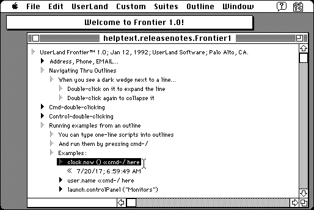

Download (external link)
frontier10.sit.hqx (1.3M) UserLand Frontier 1.0
copyright: UserLand Software, Inc.
mod date: Jan 6, 1992
license: ?
from url :
Antique: Frontier 1.0 (January 1992)
The “first system-level scripting language for Macintosh.” It is “also an outliner, with a programming language, toolset, verbset and storage system built around it.” This was publicly released in 1998 in the message Antique: Frontier 1.0 (January 1992), however the link there no longer works. Thanks to Dave Winer for supplying a new link.

Here is the md5 checksum for the download, signed with Gryphel Key 5:
--------- GRY SIGNED TEXT --------- 2857f98174cdc81c09d2f1a783386b95 frontier10.sit.hqx ------- BEGIN GRY SIGNATURE ------- Gry/4Xa8CFcUzxdN/KjbXyUksQYg/wzWDnkU6JmcP6KWbTOhDTN66MCY5mDDWHcJ rS/2kZdrNRmlXUq47NVSIHXMlDnn2rDoXzYJRRJjbU/paXTsUH97GSUQll3AqZU6 iXd137cG28VYGNovzsw5fUF9wNs2FuwME7H55t/NWjghOkJCENGHNg/adLDN5lH9 -------- END GRY SIGNATURE --------